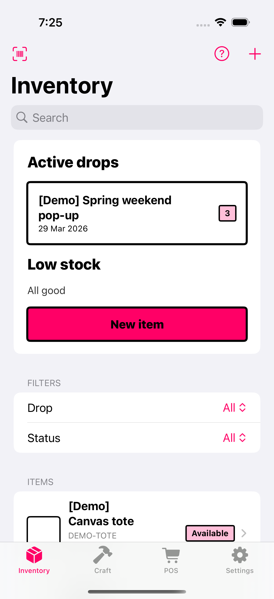
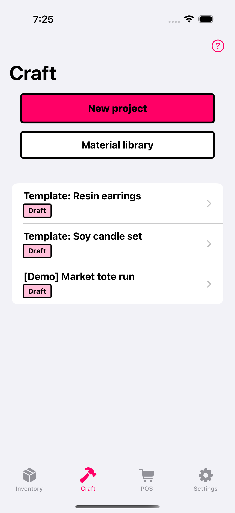
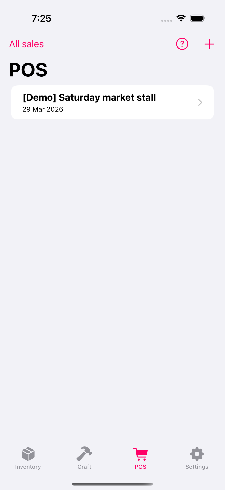
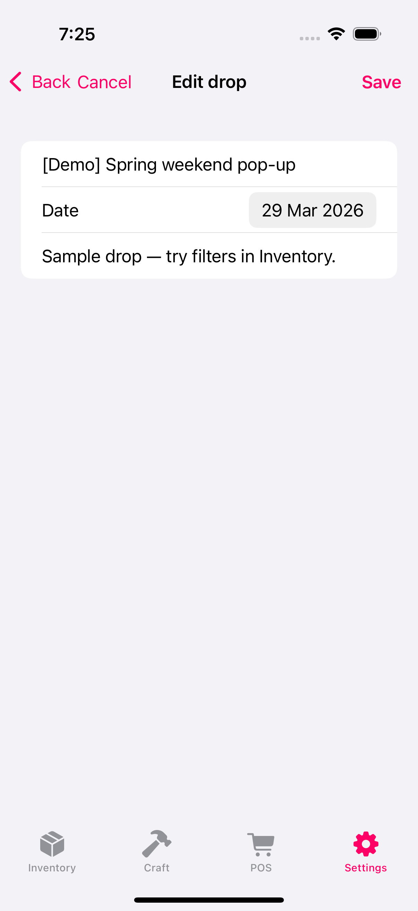
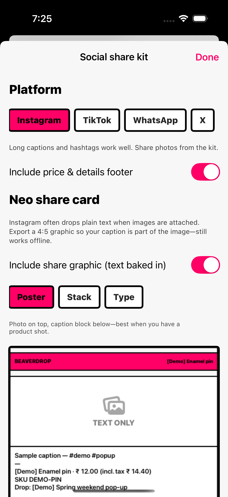
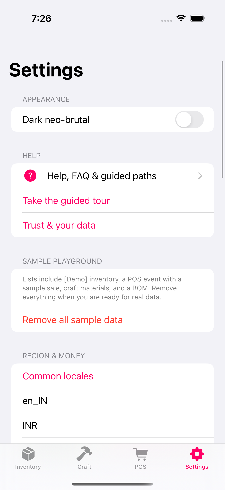

Ship faster at pop-ups
Track inventory by drop or event, scan barcodes, and spot low stock before you pack the van.
Offline-first · iPhone & iPad
BeaverDrop helps you run pop-up inventory, price handmade work, and check out at markets — locally stored, with optional CSV exports and a full .beaverbackup file when you need to restore or move devices.
Privacy: Privacy policy · Support.
Whether you sell at markets, post drops online, or price small batches — you need stock, costs, and checkout in one place. BeaverDrop keeps core data on device; it does not replace your accountant or payment processor.
Track inventory by drop or event, scan barcodes, and spot low stock before you pack the van.
Build bills of materials, labour, and margin so your sticker price reflects real costs — not guesses.
POS with large tiles, cart, tax lines, and receipt PDFs you can share. Card payments still go through your own terminal or app — BeaverDrop records the sale.
Offline-first storage, exports, and backup-friendly flows — so a broken phone is not the end of your season.
What the app includes today: three modules that share the same tax and currency settings, plus exports. Not included: cloud sync between devices, hosted storefronts, or filing taxes for you.
SKUs, categories, images, flexible tax, and social-ready captions you can copy in one tap.
Materials library, BOM lines, labour and overhead — see margin before you post a price.
Events link inventory (or event-only SKUs), cart, discounts, and payment notes. Receipt PDFs, sales history, and period summaries you can export for spreadsheets.
App-wide defaults with overrides per item or event — built for messy real-world rules.
Inventory and craft CSVs for spreadsheets; full .beaverbackup export and import for restore. Optional auto-export after changes (see Backup section).
Adaptive layouts: fast flows on phone, more room for grids and carts on tablet.
One way to use the three modules together — not a guarantee of how you’ll work, but a concrete story.
You add or update inventory (photos, SKUs, prices, tax), assign items to a named drop for this weekend’s fair, and copy a social caption when you post a preview online.
In Craft, you build a bill of materials for a tote run: materials, labour, margin — then export a quote PDF if a wholesale buyer asks.
In POS, you open your event, ring items from inventory (or event SKUs), take cash or note an external card payment, and send a receipt PDF. Completed sales reduce stock on linked inventory lines.
You export a .beaverbackup through Share (save to Files or cloud), or turn on auto-export so the app keeps the latest bundle on-device before Monday’s bookkeeping.
Sample data in the app (marked “Demo”) is only for learning — remove it from Settings when you go live.
Shots below use in-app sample data so you can see layouts and labels clearly — your own catalog will look the same structurally.






Three beats — same as your weekend: plan, make, sell.
Add items, photos, and tax rules. Group drops for the next pop-up or online release.
Build BOMs for batches, set labour, and generate quotes or invoices when someone asks.
Run POS at the event; linked inventory quantities update from completed sales. Export CSV or backup when you need records outside the app.
Straight from what Settings provides: full bundle restore, CSV for spreadsheets, and optional auto-export — not cloud sync between phones.
Export and Import from Settings → Backup & CSV. Import shows a validation summary before replacing data on this device.
Inventory CSV and craft/material CSV flows exist for spreadsheet workflows. CSV does not necessarily restore every relation or image — the app explains limits in Settings (“CSV vs full backup”).
Optional in Settings → Auto-export backup. When enabled, debounced writes after changes to a fixed file inside the app’s on-device storage (same relative path shown in Settings):
If writing fails, you get a visible error with a chance to retry; manual export in Settings remains the fallback.
No hosted BeaverDrop account. You save exports through the system share sheet to Files, iCloud Drive, AirDrop, or mail — same as other iOS apps.
Tax, invoice validity, and compliance depend on your region and how you configure fields — the app includes a disclaimer; it does not provide legal or tax advice.
Docs-style topics for inventory, costing, POS, and data safety — written for busy sellers.
Step-by-step articles for inventory, costing, and POS — plus troubleshooting and how to reach us.
Quick answers — full detail in Help center.
No cloud account is required for core offline workflows. Your data stays on device unless you export or enable optional file destinations.
You can configure region, currency context, and tax presets for your workflows — not locked to a single country model.
Yes. Export inventory and craft CSVs from the app where available, and use .beaverbackup export/import for a full restore path. See Backup & exports above.
Deleting a drop removes the drop and clears assignments from items — inventory items remain in your catalog.
BeaverDrop provides tools and exports; legal compliance remains your responsibility — see in-app trust and legal copy.
Available on the App Store for iPhone and iPad.
Guides, contact, and how we handle data — the same pages we point to from the app.